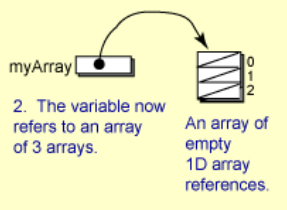
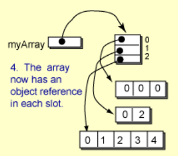
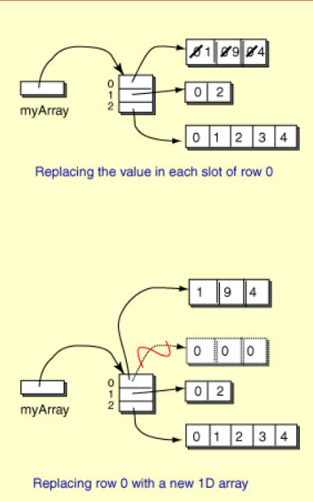

🧩 Arrays multidimensionales (2D)
Un array bidimensional (o matriz 2D) es un array cuyos elementos son a su vez arrays.
📌 Ejemplo típico: notas de una clase → filas = alumnos, columnas = semanas/exámenes.
✅ Regla de oro: primero fila, luego columna
matriz[fila][col]Y los índices empiezan en 0.

Para acceder a la posición 0,2 lo haríamos con matriz[0][2] y esto devuelve el entero 4.
Al igual que con una matriz 1D o un arrar, un índice de matriz puede ser un literal entero, una variable de tipo entero, un método que se evalúa como un número entero o una expresión aritmética que involucra todas estas cosas:
matriz[3][j] = 34;
suma = matriz[i][j] + suma[i][j + 1];
value = matriz[2][someFunction()];
matriz[1][0] = matriz[i + 3][algunaFunción() - 2];
🧠 ¿Qué es realmente un 2D en Java?
En Java, una matriz 2D es realmente un array de arrays:
int[][] m→ array donde cada posición contiene unint[].- Esto permite que las filas tengan distinta longitud.
✨ Esto se llama matriz irregular (o jagged array).
🧱 Declaración e inicialización
✅ 1) Con lista de inicialización (matriz “ya llena”)
int[][] m = {
{8, 1, 2, 2, 9},
{1, 9, 4, 0, 3},
{0, 3, 0, 0, 7}
};
✅ 2) Con new (matriz “vacía” con tamaño fijo)
int[][] m = new int[5][7]; // 5 filas, 7 columnas. Todo se inicializa a 0
✅ 3) Matriz irregular (filas con longitudes distintas)
int[][] m = new int[3][]; // 3 filas, pero todavía sin columnas
m[0] = new int[2]; // fila 0 tiene 2 columnas
m[1] = new int[5]; // fila 1 tiene 5 columnas
m[2] = new int[1]; // fila 2 tiene 1 columna
⚠️ OJO: en este caso, antes de acceder a m[i][j], asegúrate de que m[i] NO es null.
📏 Longitudes (el error más típico)
int filas = m.length;
int colsFila0 = m[0].length;
m.length→ número de filas.m[i].length→ número de columnas de la fila i.
⚠️ En matrices irregulares, cada fila puede tener columnas distintas:
for (int i = 0; i < m.length; i++) {
System.out.println("Fila " + i + " tiene " + m[i].length + " columnas");
}
🧭 Entender mejor los arrays o matrices 2D
Un array bidimensional se implementa como un array unidimensionales. La declaracion
int [][] myArray; // 1.

declara una variable llamada myArray que en el futuro puede hacer referencia a un objeto de matriz. En este punto, no se ha dicho nada sobre el número de filas o columnas.
Para crear una matriz de 3 filas, haríamos:
myArray = new int [3][]; // 2.

Ahora myArray hace referencia a un objeto de matriz. El objeto de matriz tiene 3 celdas. Cada celda puede hacer referencia (en el futuro) a una matriz de int, un objeto int []. Sin embargo, ninguna de las celdas se refiere todavía a un objeto. Se inicializan a nulo.
Una forma de crear la fila 0 es esta:
myArray[0] = new int [3]; // 3.

Esto crea un objeto array 1D y coloca su referencia en la celda 0 de myArray. Las celdas del array 1D se inicializan a 0.
Una matriz o array 1D construida previamente se puede asignar a una fila:
int[] x = {0, 2};
int[] y = {0, 1, 2, 3, 4};
myArray [1] = x;
myArray [2] = y; // 4.

No es necesario que las filas tengan el mismo número de celdas.
Las declaraciones anteriores construyen la matriz 2D paso a paso.
🔥 ¿Cómo se podrían reemplazar las celdas individuales de cada fila dentro de una matriz?
Si quisieras reemplazar la primera fila del ejemplo anterior con la siguiente sentencia:
myArray [0] = {1, 9, 4}; //No funcionará.
Las llaves {...} solo se pueden usar en la declaración/inicialización, no como “literal” suelto en una asignación.
myArray[0] = new int[]{1, 9, 4}; //se puede hacer así
//o inicializarlo a la vez que se crea o se declara
int[][] myArray = {
{1, 9, 4},
{0, 2},
{0, 1, 2, 3, 4}
};
//También se podría hacer así, pero aquí crearíamos un array x reemplazaríamos
// la fila 0 con esta nueva x
int[] x = {1, 9, 4}; // declarar e iniciar x
myArray [0] = x; // asignar a myArray
Lo correcto sería recorrer la fila 0 y reemplazar el valor de cada celda.

🔁 Recorrer una matriz 2D
🧩 Recorrido clásico (for anidados)
for (int fila = 0; fila < m.length; fila++) {
for (int col = 0; col < m[fila].length; col++) {
System.out.print(m[fila][col] + " ");
}
System.out.println();
}
🧪 Recorrido con foreach (cómodo, pero menos control)
for (int[] fila : m) {
for (int valor : fila) {
System.out.print(valor + " ");
}
System.out.println();
}
✅ Útil cuando solo quieres leer (no necesitas índices).
🖨️ Imprimir bonito una matriz (método reusable)
public static void print2D(int[][] m) {
for (int i = 0; i < m.length; i++) {
System.out.print("[");
for (int j = 0; j < m[i].length; j++) {
System.out.print(m[i][j]);
if (j < m[i].length - 1) System.out.print(", ");
}
System.out.println("]");
}
}
🧰 Operaciones típicas (para practicar bien)
➕ Suma total
public static int sum(int[][] m) {
int total = 0;
for (int i = 0; i < m.length; i++) {
for (int j = 0; j < m[i].length; j++) {
total += m[i][j];
}
}
return total;
}
🏆 Máximo (y su posición)
public static int[] maxPos(int[][] m) {
int max = m[0][0];
int filaMax = 0, colMax = 0;
for (int i = 0; i < m.length; i++) {
for (int j = 0; j < m[i].length; j++) {
if (m[i][j] > max) {
max = m[i][j];
filaMax = i;
colMax = j;
}
}
}
return new int[]{max, filaMax, colMax};
}
🧊 Diagonal principal (solo si es cuadrada)
public static int diagSum(int[][] m) {
// Precondición: m es NxN
int s = 0;
for (int i = 0; i < m.length; i++) {
s += m[i][i];
}
return s;
}
⚠️ Errores típicos (y por qué pasan)
💥 1) ArrayIndexOutOfBoundsException
✅ Suele ocurrir por:
- usar <= en vez de <
- confundir filas/columnas
- asumir que todas las filas tienen la misma longitud
❌ Mal:
for (int j = 0; j < m.length; j++) { // m.length NO son columnas
System.out.println(m[0][j]);
}
✅ Bien:
for (int j = 0; j < m[0].length; j++) {
System.out.println(m[0][j]);
}
💥 2) NullPointerException en matrices irregulares
❌ Si haces esto:
int[][] m = new int[3][];
System.out.println(m[0].length); // m[0] es null
✅ Primero inicializa la fila:
m[0] = new int[2];
System.out.println(m[0].length);
🧠 Mini-resumen final
- 🧠 Un array 2D es un array de arrays y puede ser irregular.
- 🔁 Recorridos con
foranidados sin errores. - 🧯 Si accedo a filas que no tienen arrays obtendré un
NullPointerExceptionen matrices irregulares. - 📌
matriz.lengthson filas ymatriz[fila].lengthson columnas de esa fila.